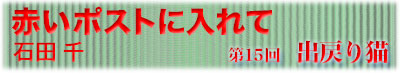

|  |
|
ビールの飲みすぎで、風邪をひいた。 冷房のきいたビアホールで、ちょっと寒いと思ったのに、勢いづいてもう一杯と欲張った。帰り道には、背筋がこわばって、体の表面は熱いのに、はらわたがひえびえとして動かない。いやな汗が出る。うわばみのように飲んだから、喉の入口も、がさがさする。 部屋に戻り、しばらく横になっても、ぐったりとして動けない。このまま寝ると、明日はもっと調子が悪くなるからと、粘土のような体をひっぱって、台所に立つ。小鍋に昆布と梅干としょうがのかけらを放り込み、弱い火にかける。乾布摩擦をして首に手ぬぐいを巻く。そのころには、梅干からいい塩気がでて、夏風邪スープができている。 板の間にへたりこんで、すすっていると、鼻のあたまに汗をかく。そして飲み干すなり布団にもぐって懸命に寝ると、だいぶ風邪気がぬける。 翌朝すこし食欲がでたから、鶏ぞうすいを作る。なんとなしに買った鶏肉が役に立った。食べると、ごるごると腹が動き出す。これでもか、とねぎとしょうがを放り込んで、汗だく鼻だくで食べながら、ふだん食べない鶏のささみを買っておいたのは、具合が悪くなる予兆だったのかと、考え、鶏のささみは、チャーも病気のときに食べていた、と鼻をすする。 中学にあがってから、家にずっと猫がいる。チャーは初代のきじとらのオス猫だった。 春さきに高校生だった兄が、ともだちの家でたくさん生まれちゃったから、とつれてきたとき、鞄から這い出た子猫を見て悲鳴をあげたのは、動物ぎらいの母だった。 無責任な兄いもうとは、まったく役立たずで、ちいさな生き物をかわいがったりからかったりするだけで、日中は学校に行ってしまう。 返してきなさいと口をすっぱくしても、ずるずると先延ばしにするのは、兄の得意とするところだったから、目が開いたばかりの子猫は、そのまま居ついてしまった。 びくびくしながらも世話をして、一日じゅう一緒にいた母は、かわいい盛りの子猫の必死さに次第に情が移って、もうひとり子どもを育てるようなものだと、腹をくくってからは、道端の猫にも、にゃーと鳴きまねをする猫おばさんに変貌した。 チャーは、おっとりした気のいい猫だった。しばらく腹の弱いときがあって、獣医に、鶏のささみをすりつぶしてやりなさい、と言われた。手間がかかるが、ペットフードよりも喜んで食べるから病気になるとささみを食べさせた。 すこしおおきくなると、母が、チャーちゃんごろんとしてごらん、というと、その場にひっくり返って腹を見せる芸を覚えて、家族を沸かせた。 餅を担がされる赤ん坊のように、家族全員が見守るなか、儀式のようにゆっくりと、まじめな顔をしてひっくり返る。起きたそばから、もう一回ごろんだよ、といわれても、いやな顔をしないのが立派だった。 だんだん新しい家に慣れてくると、脱衣かごにタオルを敷いた寝床をきゅうくつがるようになった。あちこちにあお向けにのびたまま寝込んで、ときどき寝言を言う。チャーちゃんは、もう猫じゃないねえ、と母は腹をなでていた。 夏休みになると、家のなかに人が増えて、チャーは誰にでもなついて、腹のうえで甘えながら昼寝をした。夏なのに背中にあたたかい重みを感じて目をさまし、起き上がっても、子猫はひっくり返されたまんまで、目をさまさずその場にまるくなって眠りつづける。そうしているうちに、起こるべきしてことは起きた。 突然に、背中に痛みがささった。寝ぼけながら体を起こすと、黒いけものが唸り声をあげて飛び去る。 けものは、テーブルの下に隠れると、低く唸り続け、近づくとシャーと鋭い牙を見せて威嚇する。だらりと伸びた後ろ脚を必死でなめる。唸って叫び声をあげている黒いけものは、命の危機に瀕して隠された野性がを総動員し、全身を総毛だたせた、うちの飼い猫の姿なのだった。 生まれながらの寝相の悪さがわざわいした。背中にぴたりとくっついて寝ていたのに気がつかず、ばたんと寝返りをうったときに尻の下敷きにした。 一家総出でつかまえて、おおきなタオルにくるむと、そのまま動物病院まで走った。大腿部複雑骨折、全治二ヵ月の重症で、そのまま入院手術となった。折れたところは金具でつないだという。 翌日、包帯をぐるぐると巻かれ、チャー殿と書かれた診察券をぶらさげ、ぐったりと帰ってくると、いつものおとなしいチャーにもどっているのが哀れだった。ごめんね、と近づいても、うつろな顔で長椅子にねそべって、毛布にくるまれている。 だらしなく変なところに寝ているからだ、動物は保険がきかないから手術代はべらぼうなんだ、と叱られ、夏じゅうちいさくなっていた。二学期があんなに待ち遠しい夏休みはなかった。 毎日病院につれていくうちに、包帯がバンソウコウになり、手術のときに剃られて灰色の地肌の見えていた脚が、もとの雉とらにもどるようになると、チャーは前のように走ったり飛んだりできるようになったが、座るときだけ、ちょうど体操の休めの姿勢のように右足を伸ばして座るようになった。罪悪感とは、日々麻痺するもので、その姿は、なんとなくあてつけのように見え、そのうち気にもしなくなった。 チャーが家出したのは、それから三年後の夏の終わりだった。 そのころは、古いビルの七階に住んでいた。ビルは白くくすんで、ところどころコンクリートの肌が見え、ひびわれていた。住んでいる人たちが集まって相談し、壁面の塗装工事をすることになった。ほどなくビルはぐるりと足場がくまれ、作業員が歩き回るようになった。 夕暮れどきに、チャーがいないと気がついた。どこかで眠っていると思ったのに、いない。ベランダのガラス戸が開いている。洗濯を干すたび、換気をするたびに用心していたのに、何度呼んでも出てこない。足場をつたって、ぐるぐると出ていったに違いないということになった。 そうとわかると母はすぐさまはだしになった。 よいせとベランダの柵を乗り越え、足場に飛びうつり、すたすたと歩いていく。脚のすくむような高さかから、ぐるぐると螺旋しながら一軒一軒のベランダをのぞく。 山の村育ちだから、高いところは怖くなかったけど、きゅうに窓辺にはだしのおばさんがいたから、なかの人たちがびっくりしてた。 ぺたぺたと一階まで降りてくると、けろりとしたものだった。 母は無事に下まで降りたが、チャーは見つからない。 気のちいさい猫だから、きっと遠くにはいけないと、父は帰宅すると毎晩懐中電灯を持って、近くの公園やとなりの社宅の軒下を照らした。兄はポスターを作ってあちこちに貼った。日を追うごとに嘆いたのは、命がけで足場を歩いた母で、テレビで、似てもいない猫が出るたびに、号泣するので困った。 その後足場も取り払われ、チャーが自力で戻ってくる手立ても消えてしまい、秋風も冷たくなった。もう死んでしまっただろうか、公園に探しに行くのも打ち切りだろうかと思いながらも、あきらめきれずにいる日が続いた。 星の冴えた晩だった。一階のごみおき場に、母と下りていったら、バケツのならぶ奥でガサガサと生き物の気配がする。とっさにチャーちゃんなの、と声をかけると、ニャーと猫が鳴く。 母はすぐさま、タオルとかご、と命じ、またしても一家総出で捕獲作業となった。 入口は、グリコのプリッツを持った父がふさぎ、がさがさと箱をふって、チャーならば、これで出てくるぞ、と興奮する。グリコのプリッツはチャーの大好物で、箱をあける音だけで、飛んでくる。そして、まさしく音につられるように、雉とらの、やせぎすの野良猫が姿をあらわすと、それとタオルを広げてつかまえて連れ戻されたのだった。 まっすぐ風呂場につれていかれ、体じゅう泡だらけにされた。鳴き喚くのを押さえつけて、ばか。痩せて、背骨がごとごとになってる。母も泡だらけで、わんわん泣いた。 そうやって、チャーはふたたび家猫に戻った。きっと昼はこわくて動けずに、夜はごみをあさっていた。 その後、安心したせいか、チャーはでぶりと太った。東京ぐらしから足を洗う両親と一緒に東北の町に移って、地面を踏んでのびのび暮らした。ときおり、おおきな腹の虫を吐き出して家族をびっくりさせるくらいで、大病もしなかった。 十三才で、彼岸に行くまでの数日のことは、いまだ思い出すたび泣けるので、言わない。 チャーは、松林のなかの霊園で火葬された。骨が出てきたとき、一緒に金具がころんと出てきたと、連れて行った父から聞いた。 やっぱりあれはチャーだった、出戻って、のうのうとしているのを見て、同じ猫なのだろうかとうたぐっていた、と言ったら、チャーはいつだって、家出のあとだって、おまえの前でうらめしそうに脚をのばしていたじゃないか、と兄が言う。 ほんとうに、都合の悪いものは見えないものだと知る。 |
| 石山千（いしやま・せん） 1968年福島県生まれ、東京育ち。 大学卒業後、作家・嵐山光三郎の助手となり現在にいたる。 2001年第一回古本小説大賞受賞。 |